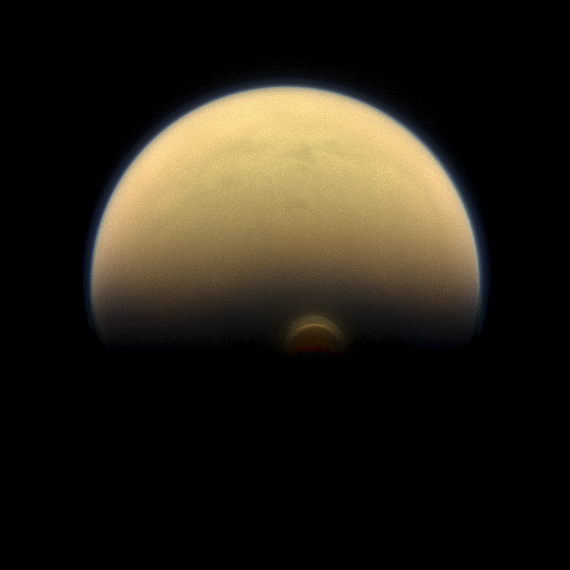
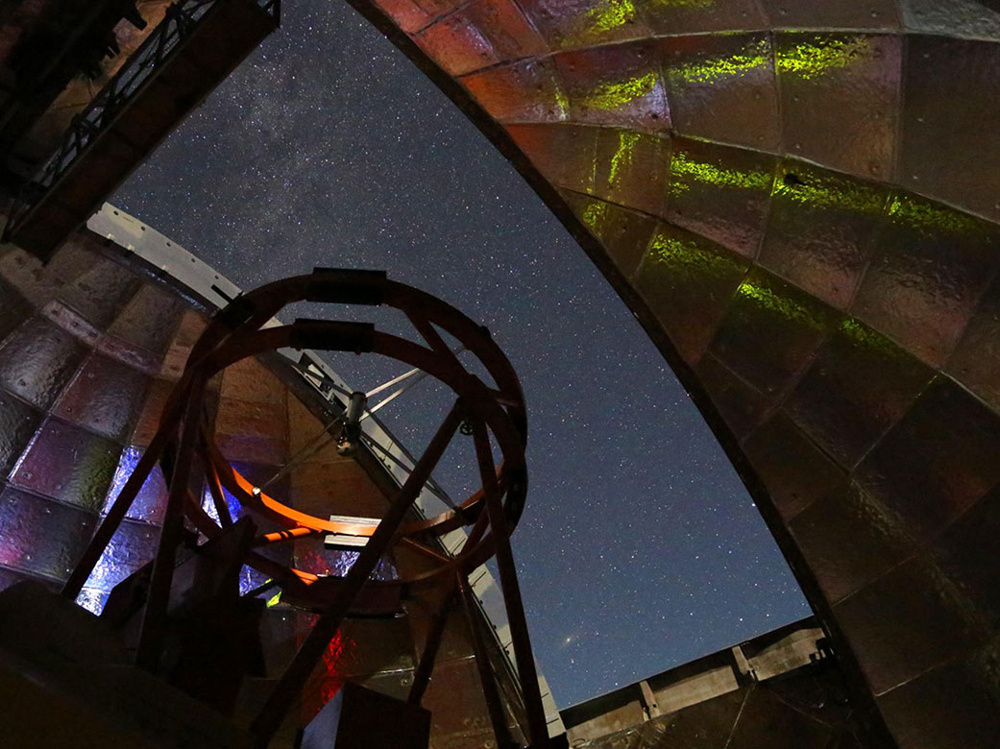

Simulating Atmospheres to Understand Climate
I am a climate science PhD candidate at Yale University interested in modeling atmospheric dynamics to explore the climates of a vriety of planets, including Earth. After completing my undergraduate degrees in physics and math at Central Connecticut State University in 2017, I worked as an observational astronomer at NASA Goddard Space Flight Center, where, in addition to modeling infrared observations of Saturn's moon, Titan, from ground based telescopes, I also supported the Cassini spacecraft during its final few months in orbit of Saturn.
Since beginning my PhD program in 2019, my primary research focuses on understanding the geophysical fluid dynamics (the winds) of Titan's atmosphere. My dissertation project involves developing new code for the Titan Atmospheric Model (TAM), to accurately simulate Titan's changing wind field. Over the next few years, my work will help to elucidate the causes and mechanisms that give rise to Titan's atmospheric phenomena.
My secondary research concerns the evolving role of subsurface waves in the Arctic Ocean, as measured from stationary moorings in the Beaufort Sea. Exploring how the propagation of these waves has evolved in the past may help us to understand the fate of mixing in the Arctic Ocean.

Nicholas Lombardo
Ph.D. Candidate
Yale Universty
Interests
- Planetary atmospheric dynamics
- Exploration of Ocean Worlds
- Climate modeling
- Astrobiology
Recent Papers
- Detection of Propadiene on Titan
ApJL, 881, 2019 - Ethane in Titan's Stratosphere from Cassini CIRS Far- and Mid-Infrared Spectra
AJ, 157, 2019 - Spatial and seasonal variations in C3Hx hydrocarbon abundance in Titan’s stratosphere from Cassini CIRS observations
Icarus, 317, 2019
Education
M.Phil. Earth and Planetary Sciences
Yale University, 2021
B.S. Physics
Central Connecticut State University, 2017
B.A. Mathematics
Central Connecticut State University, 2017
Research
General Circulation Models
To understand why an atmosphere behaves a certain way, scientists use General Circulation Models (GCMs), which are computer-based programs that solve the basic Navier-Stokes equations of fluid dynamics around a planetary body. To ensure the model is a realistic representation of the atmosphere being studied, constraints are applied that are usually based on observations of the planet. For example, Titan's stratosphere tends to have a different chemical composition in winter than in summer, which causes a changing balance between the transport of heat by wind and the radiation of heat by molecules. Other physical processes that could be included in GCMs are interactions between the atmosphere and the surface (such as drag caused by a rough surface), convection of moist air, and the effects of liquid on the surface.

The south pole of Titan during Autumn, as seen by the Cassini spacecraft. The bright region in the otherwise night-side of the moon is a high altitude cloud, likely caused by the stratospheric polar vortex, which is currently being studied using General Circulation Models.
Observational Astronomy
Using infrared telescopes, including the NASA Infrared Telescope Facility (IRTF) and the Composite Infrared Spectrometer (CIRS) on the Cassini spacecraft, I studied the composition of Titan's atmosphere. Both ground- and space-based telescopes offer complimentary views of planetary atmospheres. While in orbit around Saturn, Cassini CIRS was able to measure the temperature and composition of Titan's atmosphere at a very high spatial resolution - enough to make maps of Titan's atmospheric chemistry across the entire Cassini mission. On the other hand, ground-based telescopes are larger, and more powerful than their space-based counterparts. These aspects of ground-based observatories make them excellent tools to search for very scarce molecules in Titan's atmosphere, that would be too low in abundance to be seen with space-based telescopes like CIRS.

Inside of the NASA Infrared Telescope Facility (IRTF)
Credit UH/IfA